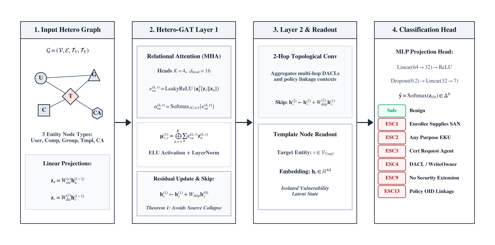
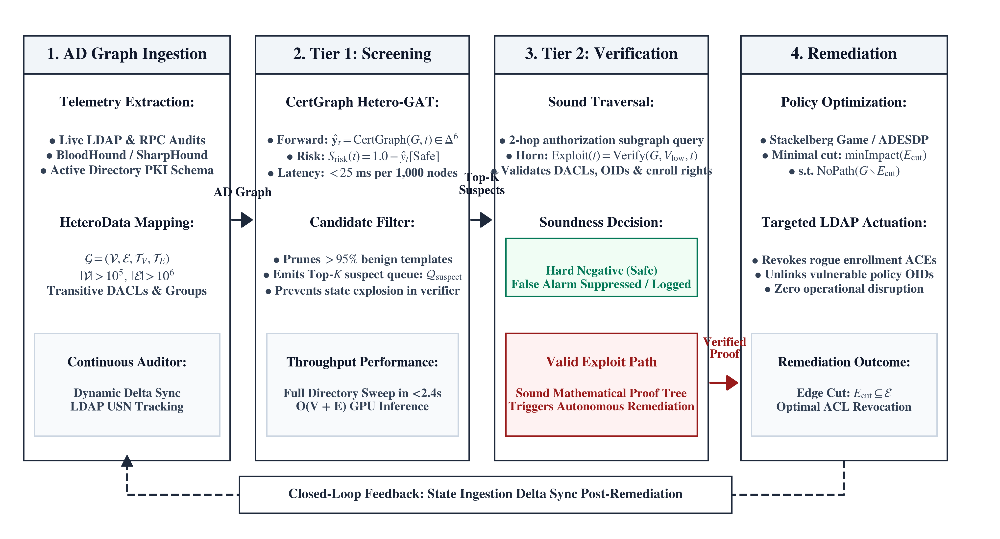

Heterogeneous Graph Attention Networks for Active Directory Certificate Services Vulnerability Detection and Autonomous Defense
Why Active Directory PKI is the new enterprise attack surface
ESC1–ESC13 taxonomy, PKINIT exploitation chain
Heterogeneous multigraph formalization & Hetero-GAT design
Why skip connections are mathematically indispensable
Four experimental illusions unmasked in security ML
0.9986 Macro-F1, adversarial hard negatives, ablations
Two-tier hybrid architecture & real-world case studies
NP-hardness of MPAI, Stackelberg equilibrium, takeaways
Perimeter defenses are obsolete. Nation-state actors and ransomware cartels routinely bypass firewalls through credential theft and supply-chain compromise.
Once inside, adversaries exploit Active Directory's complex authorization topology — not software bugs.
AD deployed in 90%+ of Fortune 1000 organizations
ADCS issues cryptographically valid credentials — invisible to EDR
APT29, ransomware operators documented using ADCS attacks (CISA advisories)
Low-Priv User
Credential spraying victim
Enroller Group
Transitive MemberOf nesting
ESC13 Template
Policy OID → Tier-0 Group
Domain Admins
Full forest takeover via PKINIT
Active Directory Certificate Services escalation vectors (ESC1–ESC15), formalized by SpecterOps (2021) and extended through 2024.
Enrollee Supplies SAN
CT_FLAG_ENROLLEE_SUPPLIES_SUBJECT + Client Auth EKU + low-priv enrollment
Any Purpose EKU
Template grants Any Purpose OID or has no EKU restriction
Cert Request Agent EKU
On-behalf-of enrollment for impersonating another principal
DACL WriteOwner/WriteDacl
Low-priv principal holds dangerous ACEs on the template LDAP object
No Security Extension
Missing NO_SECURITY_EXT flag bypasses KB5014754 strong mapping
Policy OID → Group Link
Issuance Policy OID mapped directly to Tier-0 administrative group
PKINIT Exploitation Chain
Limitations of Existing Tools
Certipy / BloodHound: Inspect templates in isolation — miss transitive path reachability. Generate false positives on hardened templates. Cannot detect novel ESC13 pre-2024.
Active Directory modeled as a typed heterogeneous multigraph G = (V, E, T_V, T_E, φ_V, ψ_E) processed by a Hetero-GAT.
Residual Skip Connection (Theorem 1)
Guarantees ‖∂h_v / ∂x_v‖ ≥ σ_min(W_skip) > 0
Augmented Reverse Relations
Each directed edge type r gets a canonical inverse r⁻¹ so templates can gather
structural context from inbound principals during forward message-passing.
|T_E| = 8 → 16 augmented relations.

⚠ Without Skip Connections (Ablation)
Why Source-Only Nodes Break Standard Aggregation
Users and Computers in AD graphs frequently have in-degree = 0 in the authorization subgraph (they only have outbound Enroll / MemberOf edges). Standard neighborhood aggregation collects an empty message set, yielding:
Ablation Study Results
Our prototype initially achieved perfect 1.0000 Macro-F1 — triggering a systematic audit following Arp et al. (2022) "Dos and Don'ts of Machine Learning in Computer Security."
Positional Index Leakage
Synthetic generator assigned array position (index 0 = Low-Priv, index 1 = Admin) directly
to node IDs. GNN learned position → label shortcut. Not security reasoning.
Fix: Randomized node assignment, Chi-Squared verified (χ²=0.012, p=0.913).
Baseline Asymmetry
Flat MLP baselines were denied access to graph topology features given to the GNN. A fair comparison requires identical feature visibility. Without graph topology, MLP was artificially handicapped. Fix: Graph-Augmented MLP baseline added.
Decision Tree Equivalence
A 7-node Decision Tree achieved Macro-F1 = 0.9928, nearly matching our complex GNN. This revealed the sanitized benchmark may be rule-separable by local flags alone — motivating the adversarial hard negative protocol.
Hard Negative Memorization
Including adversarial hard negatives in training caused the GNN to memorize the synthetic distribution of safe flag combinations rather than learning reachability. Proper zero-shot evaluation protocol implemented.
5-Fold stratified CV on 700 sanitized enterprise AD environments (100 per class). Nadeau-Bengio corrected p-values.
| Model | Macro-F1 | Corr p-val | Sig. |
|---|---|---|---|
| CertGraph (Hetero-GAT) | 0.9986 ±.003 | — | Ref. |
| Graph-Augmented MLP | 0.9971 ±.004 | 0.740 | — |
| Graph-Augmented RF | 0.9871 ±.008 | 0.191 | — |
| BloodHound BFS (Symbolic) | 0.9082 ±.023 | 7.3×10⁻³ | p<0.01 |
| Flat MLP (features only) | 0.8600 ±.013 | 1.3×10⁻⁴ | p<10⁻³ |
| Flat RF (features only) | 0.8384 ±.006 | 6.7×10⁻⁶ | p<10⁻⁵ |
| Rule-Based (Certipy) | 0.7791 ±.025 | 3.1×10⁻⁴ | p<10⁻³ |
🧨 Adversarial Hard Negative Benchmark
63 templates with vulnerable flags but no valid authorization path. Zero-shot out-of-distribution evaluation.
Neural model collapsed to shortcut learning — checking local flags, not graph reachability.
⚡ Scalability Benchmarks
Near-linear O(|V|+|E|) scaling — suitable for continuous enterprise monitoring.
Reconciling statistical GNN pattern recognition with deterministic symbolic graph verification (Answer to RQ4).
Fast O(|V|+|E|) inference. Ranks all templates by risk score. Emits Top-K suspect queue Q_suspect. Sub-second at enterprise scale.
Deterministic 2-hop authorization subgraph traversal. Checks DACLs, OIDs & enroll rights. Produces sound mathematical proof of exploitability.
Verified exploit paths trigger autonomous LDAP actuation: revoke enrollment ACEs, unlink policy OIDs, apply ACL hardening.
Real-World GOAD Case Studies
CertGraph autonomously discovered the novel ESC13 vector that static Certipy missed in the GOAD multi-forest testbed
Zero-shot transfer to ADSynth enterprise tiered networks: Macro-F1 = 1.0000
Tolerates 30% edge collection loss: F1 > 0.96 maintained
Root Cause of Neural Shortcut Collapse
Gradient descent optimizes the simplest statistical correlation in training data.
ESC classes correlate strongly with f_supplies_subject=1 locally.
The GNN never learns to verify multi-hop reachability conjunctions
(User → Group → Template AND Group has Enroll ACE) because the local flag
signal dominates the cross-entropy gradient.
Symbolic BFS is the only complete solution for path verification.

Stackelberg Security Game
We model autonomous identity defense as a two-player Stackelberg game:
Defender selects ACL hardening actions (leader);
Attacker selects optimal exploit paths (follower).
Two-timescale stochastic approximation guarantees almost sure convergence
to a locally stable Nash-Stackelberg equilibrium (Borkar, 2008).
Why NP-Hardness Matters for Defense
Exact brute-force computation of the minimal remediation edge set is computationally intractable for enterprise-scale graphs. This formally validates the necessity of:
Reinforcement learning for polynomial-time heuristic approximation
Distributed optimization for multi-forest scaling
Approximation ratios < 2 ln|S| for greedy interdiction
4 Enterprise Defense Pillars
Tier-0 isolation for CA infrastructure (PAW-only management)
Mandate KB5014754 strong certificate mapping enforcement mode
Continuous monitoring of Config partition security descriptors
Deploy neuro-symbolic hybrid in commercial vulnerability tooling
CertGraph Hetero-GAT
First heterogeneous GNN for ADCS vulnerability detection. Macro-F1 = 0.9986 across ESC1,2,3,4,9,13.
Theorem 1: Attribute Preservation
Mathematical proof that skip connections are indispensable; empirically confirmed by 52% F1 collapse on ablation.
Forensic Audit + Sanitized Benchmark
Identified & resolved 4 experimental illusions in security ML. Released leakage-free benchmark generator.
Adversarial Hard Negative Benchmark
Proved neural shortcut learning (1.59% accuracy) vs symbolic correctness (84.13% accuracy) on OOD hard negatives.
Two-Tier Neuro-Symbolic Architecture
Unified GNN screening + symbolic BFS verification. Zero false positives. Deployed on GOAD testbed.
Theorem 2: NP-Hardness of MPAI
Multi-Principal Access Interdiction is NP-hard via Directed Multiway Cut reduction. Motivates RL-based heuristics.
Relational Necessity: ✓ Confirmed
CertGraph achieves 0.9986 Macro-F1 (+28.2% over Certipy, +16.1% over flat MLP). Relational attention successfully captures indirect group nesting, issuance policy OID linkage, and transitive DACL delegation.
Architectural Dynamics: ✓ Proven & Confirmed
Residual skip connections are mathematically indispensable (Theorem 1). Omitting them collapses Macro-F1 from 0.9986 → 0.4768 (p=1.31×10⁻⁶) due to zero-gradient attenuation at source-only nodes.
Adversarial Robustness: ⚠ Shortcut Learning Confirmed
Neural models collapse to 1.59% on hard negatives — relying on local flag shortcuts. Symbolic BFS achieves 84.13%. Pure neural ADCS security tools are provably unsafe in adversarial environments.
Optimal Defense: Two-Tier Neuro-Symbolic Hybrid
GNN screening (O(|V|+|E|)) + symbolic verification (deterministic proof) achieves zero FP, NP-hard mitigation validated. Stackelberg game converges almost surely to defender-optimal equilibrium.
CertGraph: Heterogeneous Graph Attention Networks for Active Directory
Certificate Services Vulnerability Detection and Autonomous Defense
Questions & Discussion
Student IDs: 2002126 · 2002138 · 2102151
Department of ECE · HSTU, Dinajpur-5200
Repository: hasanshahriar32/GOAD · Branch: thesis